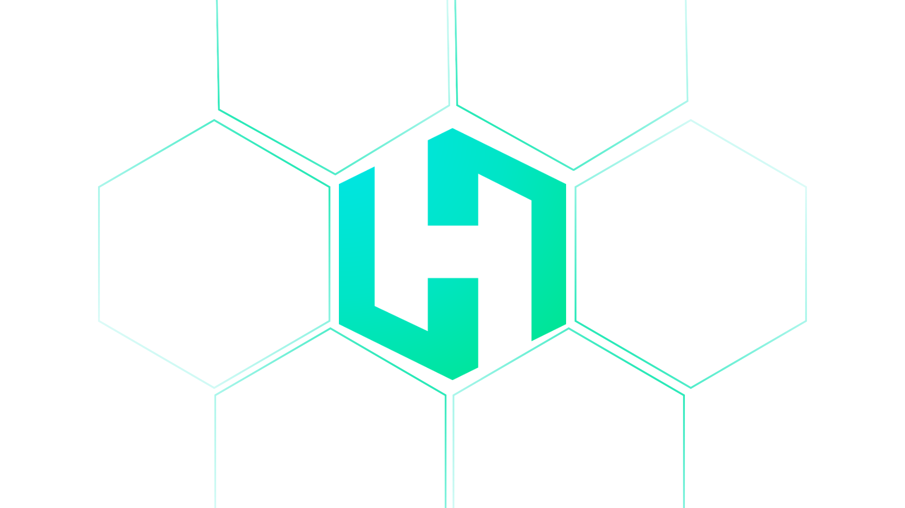

Master Filipino Sign Language with AI-powered hand tracking, real-time feedback, and a personalized learning journey designed for the Deaf and hard of hearing community.
Learners
Signs Taught
Success Rate

Communication should have no barriers. HandsOn is an interactive learning platform dedicated to making Filipino Sign Language (FSL) accessible, accurate, and engaging for everyone. By combining advanced computer vision with an intuitive learning environment, we provide real-time validation to help users master hand poses with precision and confidence.
Our goal goes beyond just teaching a language. We aim to foster a more inclusive society where the Deaf and hard-of-hearing community can connect seamlessly with the world around them.
Our platform combines cutting-edge AI with accessibility-first design
Advanced computer vision analyzes your hand movements in real-time for accurate feedback.
Get immediate visual cues with color-coded indicators to correct your form instantly.
Follow a carefully designed curriculum from basics to advanced FSL conversations.
Connect with other learners and native signers in a supportive environment.
Maintain streaks, earn achievements, and visualize your learning journey.
Test your skills in AI-powered scenarios that simulate real FSL conversations.
Join thousands of learners mastering sign language with AI assistance
Start Your Journey